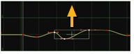

通过将曲线上的点移动到新位置来编辑曲线。如有必要，可以向曲线添加更多点。您还可以自由绘制曲线，使用通常的编辑功能，如复制和粘贴、平滑曲线和过滤、内插曲线、循环、反转或否定曲线，以及使用表达式修改曲线。
向曲线添加点
要向曲线添加点，请执行以下操作:
| 1。 | 单击要编辑的曲线。曲线变为黄色，表示已选定。 |
| 2. | Ctrl / Cmd + Alt + 单击要添加点的曲线编辑器部分。您可以在曲线上和曲线外添加点, |
OR
| 1。 | 在编辑器上单击鼠标右键，然后选择 编辑 > 生成 。的 生成密钥 对话框打开。 |
| 2. | 在 从开始 字段中，输入要用作关键帧的第一帧。 |
| 3. | 在 结束于 字段中，输入要用作关键帧的最后一帧。 |
| 4. | 在 增量 字段中，输入要在第一个和最后一个关键帧之间使用的帧增量。例如，如果您希望每十分之一帧都是一个关键帧，请输入 10 . |
| 5. | 在最后一个字段中，输入要用于 y 的值。如果不在此处输入值，关键帧将添加到当前曲线，而不修改曲线形状。 |
| 6. | 单击 好 . |
选择曲线上的点
可以通过以下方式选择点:
• 要选择单个点，请单击要选择的点。
• 要选择多个点, 转变 单击这些点，或在它们周围拖动选框。
围绕这些点绘制一个框，这些点变为白色，表示它们已被选中。
• 要选择所有点，请按 Ctrl 一个 (Mac 用户按 Cmd 一个 )。
A box is drawn around the points, and the points turn white to indicate they have been selected.
在曲线上移动点
• 要仅沿 x 或 y 轴移动点，请将点拖动到新位置。
• 向任何方向移动一个点, Ctrl 拖动 (Mac 用户) Cmd 拖动) 该点到新位置。您也可以使用数字键盘箭头轻推点。
• 要按数字调整点的值，请选择点，然后双击它旁边显示的 x 或 y 值。

• 默认情况下，移动点时，其在 x 轴上的位置将舍入到最接近的整数。要禁用此功能，可以在曲线编辑器上单击鼠标右键，然后选择 编辑 > 帧捕捉 。您也可以通过按下来暂时禁用捕捉 转变 同时移动一个点。
• 要同时移动几个点，请选择它们并将选择框拖到新位置。


要在选择框中添加或删除点, 转变 单击点。
要调整和缩放选择框，请拖动其边缘。如果选择框很窄，可以按 Ctrl / Cmd 调整大小时。这允许您仅在一个维度中调整框的大小。例如，如果您有一个在 x 轴上很宽但在 y 轴上平坦的框，您可以沿着 x 轴以这种方式调整它的大小。
要避免意外移动选择框内的点，请按 Ctrl / Cmd 转变 拖动框以隐藏框内的点时。
调整点周围的坡度
要调整点周围的坡度，请执行以下操作:
| 1。 | 选择曲线上的点。红色切线控制柄出现在点的两侧。 |

| 2. | 将切线控制柄拖动到新位置。曲线跟随控制柄。 |

绘制曲线
可以通过执行以下操作自由绘制曲线:
新闻 Alt Ctrl 转变 (Mac 用户按 Alt Cmd 转变 ) 在编辑器上绘制曲线时。 Nuke 工作室 绘制鼠标移动后的曲线。

剪切、复制和粘贴
通过执行以下操作，可以剪切、复制或粘贴任何选定的点、表达式或曲线:
| 1。 | 在曲线编辑器上单击鼠标右键。 |
| 2. | 从打开的菜单中，选择 编辑 以及要在整个曲线上使用的编辑功能，例如: |
• 编辑 > 复制 > 复制选定的键 仅复制您当前选择的点。
• 编辑 > 复制 > 复制曲线 复制整个曲线。
• 编辑 > 复制 > 复制表达式 复制创建曲线的表达式。
• 编辑 > 复制 > 复制链接 要复制曲线并保持其值与原始曲线链接，以便如果更改原始曲线，所做的更改也会影响复制的曲线。
移动曲线上的选定点
要按固定值移动曲线上的选定点:
| 1。 | 选择要移动的所有点。 |
| 2. | 在编辑器上单击鼠标右键，然后选择 编辑 > 移动 。的 移动动画关键点 对话框打开。 |
| 3. | 在 x 和 y 字段，定义如何沿 x 轴和 y 轴移动点。例如，要将选定的点向右移动 10，请输入 X + 10 在 x 字段中。 |

| 4. | 在 坡度 和 左斜坡 字段，定义要如何移动点的切线控制柄。 |
平滑曲线
要使用过滤平滑曲线，请执行以下操作:
| 1。 | 选择需要平滑的曲线部分。 |
| 2. | 在编辑器上单击鼠标右键，然后选择 编辑 > 过滤器 。的 过滤多个 对话框打开。 |
| 3. | 在 要过滤的次数 字段中，指定要过滤曲线的次数。过滤根据每个点相邻点的平均值在每个点上设置新值。过滤得越多，曲线就越平滑。 |


曲线的部分内插
通过执行以下操作，可以对曲线的部分进行插值:
| 1。 | 选择要在其之间或周围插入曲线的点。 |
| 2. | 在编辑器上单击鼠标右键。选择 插值 以及要使用的插值类型。选择 |
• 常数 在每个选定点之后强制一个常数值。


• 线性 使用线性插值。这在关键帧和它们之间的直线上产生急剧变化。


• 平滑 若要将切线坡度设置为左侧关键帧和右侧关键帧之间的坡度 (如果选定点位于沿 y 轴的这两个关键帧之间)。如果选定的点不在这些关键帧之间，并且具有比两个关键帧更大或更小的值，则切线的坡度将保持水平。这可确保生成的曲线不会超过关键帧值。


• Catmull-Rom 设置切线的坡度等于左侧关键帧和右侧关键帧之间的坡度，而不考虑选定点的位置。生成的曲线可以超过关键帧值。


• 立方 设置坡度，使二阶导数连续。这使曲线平滑。


• 水平 要使切线水平，请将选定点周围的坡度设置为零。


• 休息 调整相互独立的选定点的两条切线。


• 之前 > 常数 或 线性 插入曲线中位于第一个点左侧的部分。仅当选择了曲线上的第一个点时，此选项才有效。


• 之后 > 常数 或 线性 只插入曲线中最后一点右侧的部分。仅当选择了曲线上的最后一点时，此选项才有效。


重复曲线的一部分
要在整个曲线中重复曲线的一部分，请执行以下操作:
| 1。 | 在编辑器上单击鼠标右键，然后选择 预定义 > 循环 。的 循环 对话打开。 |
| 2. | 在 第一帧循环 字段中，输入要在整个曲线中重复的部分的第一帧。 |
| 3. | 在 循环的最后一帧 字段中，输入要重复的部分的最后一帧。 |
| 4. | 单击 好 . |
这些框架之间的曲线形状在曲线的其余部分重复。实线代表实际曲线，虚线代表原始曲线和关键帧。


反转曲线
可以通过在编辑器上单击鼠标右键并选择 预定义 > 反向 .
这使得曲线在时间上向后移动。新曲线和原始曲线都将显示。实线表示实际曲线，虚线包含可以修改的关键帧。


否定曲线
您可以通过在编辑器上单击鼠标右键并选择 预定义 > 否定 .
曲线成为关键帧的负值。例如，值 5 变成-5。新曲线和原始曲线都将显示。实线表示实际曲线，虚线包含可以修改的关键帧。


用表达式修改曲线
通过执行以下操作，可以使用 expresison 修改曲线:
| 1。 | 在曲线编辑器底部的表达式字段中输入表达式, |

OR
| 1。 | 在编辑器上单击鼠标右键，然后选择 编辑 > 编辑表达式 . |
| 2. | 在打开的对话框中，键入要用于曲线的表达式，例如, Sin (x)/x . |

| 3. | 单击 好 . |